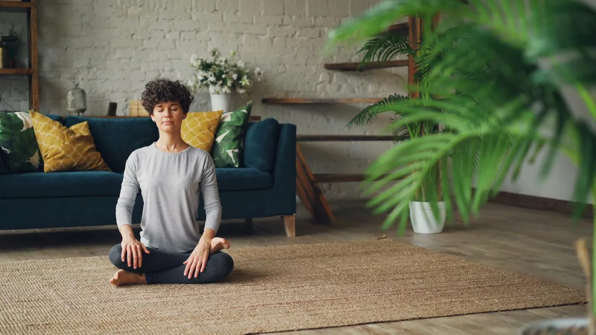

Master Your Stress: Simple Mindfulness Techniques for a Calmer You
Key takeaways
- I remember one Tuesday morning, staring at my overflowing inbox, the phone ringing off the hook, and a to-do list that seemed to multiply by the second.
- My chest felt tight, my breath shallow.
- Track what feels sustainable and adjust gradually.
I remember one Tuesday morning, staring at my overflowing inbox, the phone ringing off the hook, and a to-do list that seemed to multiply by the second. My chest felt tight, my breath shallow. It was a classic stress spiral, and I felt completely out of control. If you've ever felt that way, you know how debilitating it can be. Fortunately, I've learned that you don't need a silent retreat or hours of meditation to find peace. Master Your Stress: Simple Mindfulness Techniques for a Calmer You are within reach, even on your busiest days.
The beauty of mindfulness isn't about emptying your mind; it's about gently guiding your attention back when it wanders. It's about noticing what's happening *right now*, without judgment. Think of it like training a puppy. Your mind will wander, that's its nature. Mindfulness is the patient, kind act of bringing it back, over and over.
The 2-Minute Win
Take three slow, deep breaths right now. Inhale deeply through your nose, feeling your belly expand. Exhale slowly through your mouth, letting go of tension. Notice how you feel after just these few breaths. That's mindfulness in action!
One of my go-to techniques is the "5-4-3-2-1 Grounding Exercise." It’s incredibly simple and effective when I feel my thoughts racing. You consciously identify: 5 things you can see, 4 things you can touch, 3 things you can hear, 2 things you can smell, and 1 thing you can taste. It pulls you out of your head and into your physical surroundings, instantly reducing that feeling of being overwhelmed.
Another surprisingly powerful practice is mindful walking. It’s not about speed or distance. It’s about paying attention to the sensation of your feet hitting the ground, the movement of your body, the sights and sounds around you. I often do this on my walk to the coffee shop. It transforms a mundane task into a moment of calm. It’s a fantastic way to incorporate a related healthy tip into your day without adding extra time. Check out this related healthy tip for more ideas on movement.
I've also found immense relief in mindful eating. Before you take a bite, pause. Look at your food. Smell it. Notice the textures and flavors as you chew slowly. This simple act not only helps you appreciate your meal more but can also improve digestion and prevent overeating. It’s a gentle way to connect with your body and a similar wellness insight to explore. Find more on this similar wellness insight.
Sometimes, the most overwhelming moments happen when I'm stuck in traffic or waiting in a long line. Instead of fuming, I use those moments to practice "Body Scan" awareness. I simply bring my attention to different parts of my body, noticing any sensations – tension in my shoulders, the pressure of my feet on the floor, the feeling of my clothes against my skin. It’s a subtle way to anchor myself and stay consistent with this practice. To help you stay consistent with this, consider revisiting stay consistent with this.
Pro-Tip: Don't aim for perfect mindfulness. If your mind wanders 100 times in a minute, just gently bring it back 100 times. Each return is a victory. The goal isn't a quiet mind, but a mind that knows how to return to the present moment.
For those moments when stress feels like a physical weight, I’ve found that simple mindful breathing exercises can be a lifesaver. Just focus on the sensation of air entering and leaving your nostrils, or the rise and fall of your chest. When your mind drifts to your to-do list, gently acknowledge it and return your focus to your breath. This is a core skill that helps you Master Your Stress: Simple Mindfulness Techniques for a Calmer You. You can explore more stress guides to deepen your practice.
Disclosure: This page may contain affiliate links.
Recommended Reading
- Your Guide to Mindful Eating and Calorie Awareness
- Mastering Stress: Mindfulness Techniques for Modern Life
- Busy Pro's Guide to Quick, Healthy Eating
More in mental-wellness
Unlock Your Brain Power with This Olive Oil Secret
Struggling with brain fog? Discover how a specific type of olive oil can help unlock your brain power, improve focus, an
Read article →
mental-wellnessHow to Start Meditating Today: A Simple Guide
Feeling overwhelmed? Learn simple meditation and breathing techniques for beginners to reduce stress and find calm. Star
Read article →